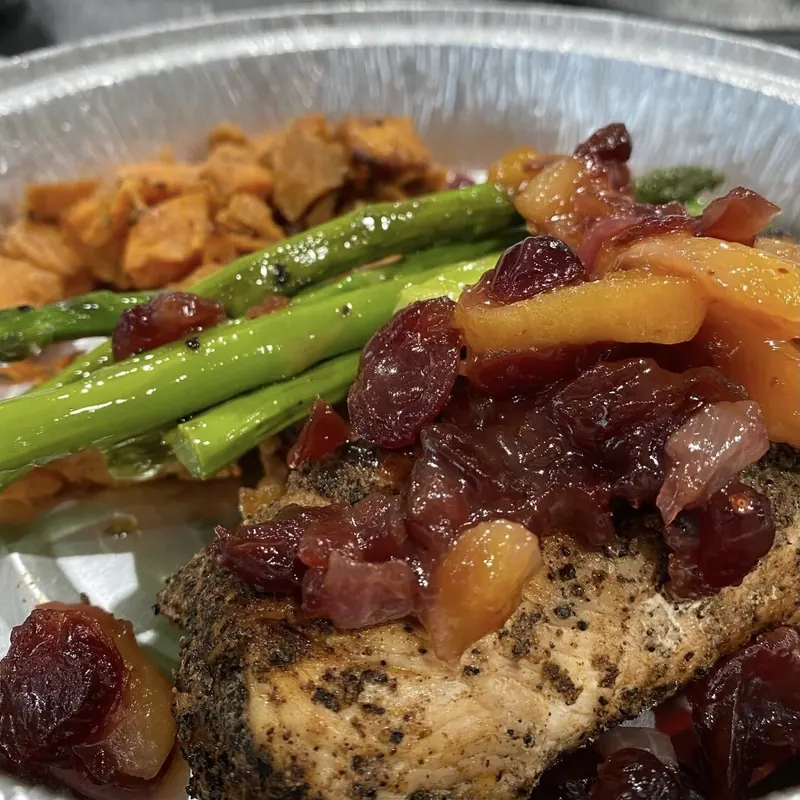
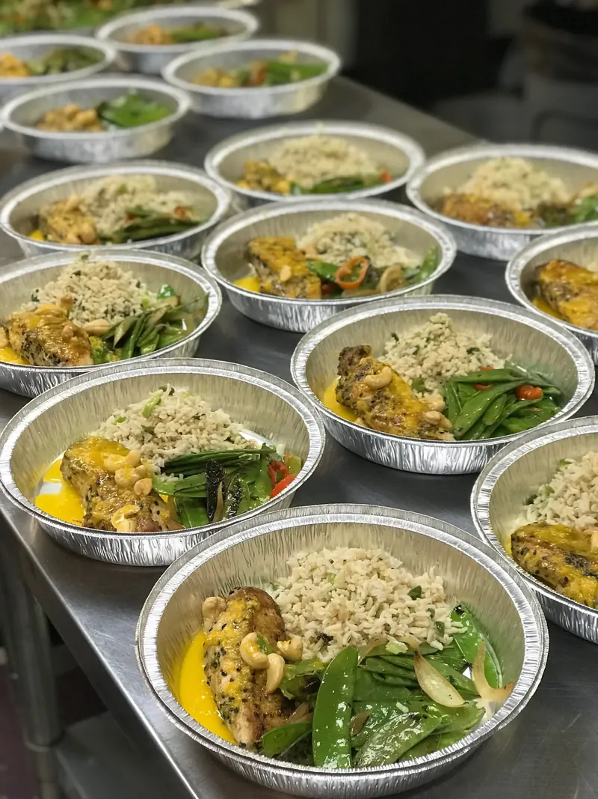

Zone
Breakfast, lunch and dinner for 6 days, built to 4-block macros for fat loss and lean muscle.
$14.05per meal · full plan
See the menu for ZoneJust One More Bite's Low-Carb Dairy-Free plan is 6 lunches ($75, $12.50 each) and/or 6 dinners ($108, $18.00 each) a week, cooked from scratch by Chef Michael Saunders and delivered every Tuesday in Raleigh, Cary, Morrisville, Research Triangle Park (RTP) and Knightdale. Double portions for two adults are available, and Chef Mike recommends 3–4 weeks in a row to really feel the difference. Order by Saturday at 8 PM.
One week is a welcome break from cooking. Three or four in a row is when lighter eating turns into a routine. That's why Chef Mike recommends a 3–4 week run, though you're welcome to order any week you like.
This is the plan for weeks when you want to eat clean without living on salads, and without giving up your evenings to cooking.
Chef Mike recommends 3–4 weeks in a row to really feel the difference. There's no contract, though: order any week, for as long as you like.
Yes. Double portions for two adults are available. Call (919) 443-5408 or email jomborders@gmail.com and we'll set it up.
6 lunches are $75 ($12.50 each) and 6 dinners are $108 ($18.00 each), before tax. Order lunches, dinners or both.
Gluten-free and dairy-free meals are made in a kitchen that also handles gluten and dairy. If you have a severe allergy, email jomborders@gmail.com before ordering so we can talk it through.
Not for this menu. Because every menu is new each week, we publish macro targets only for the Zone menu. If you want numbers, the Zone plan targets 34–40 g carbohydrate per meal.

New menu every Wednesday evening. Order by Saturday at 8 PM, and Chef Mike delivers Tuesday.
Questions? Call (919) 443-5408 or email jomborders@gmail.com.